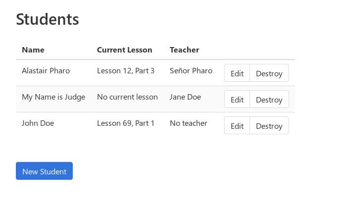
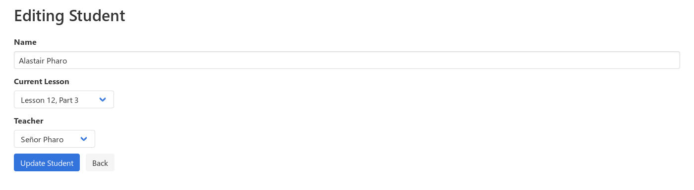
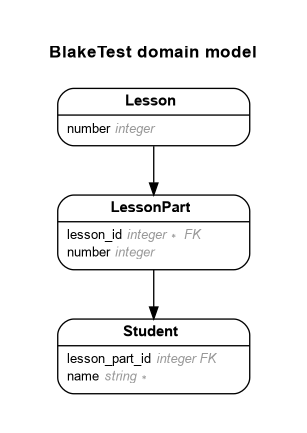

Blake's Backend Test

This is a Rails app for my job application with Blake E-Learning. The brief is as follows:
PROBLEM
-------
Company X is developing a new app for student education. Students complete
lessons and their progress is recorded. Each lesson has 3 parts - 1, 2 and 3.
There are 100 lessons in total.
PART 1
------
Generate an app that persists students and their progress.
Define routes for:
a) setting a student's progress - progress should consist of a lesson and part number.
b) returning a JSON representation of a student and their associated progress.
PART 2
------
Teachers have classes containing number of students.
a) Add a teacher model that is related to students
b) Create a reports page for a teacher to view the progress of all of their students.
PART 3
------
Calculating progress
a) add a method for updating student progress - this should verify that the
student is only able to complete the next part number in sequence e.g.
L1 P1, L1 P2, L1 P3, L2 P1, L2 P2 etc
PART 4 (optional)
-----------------
a) the first 50 lessons now have 5 parts. Ensure the system will still work as
expected and no students progress will be lost
Currently Part 1 is implemented.
Environments
The app is tested with Travis CI, and is expected to run on either Linux or Mac OSX. I have developed the app on Linux.
System Dependencies & Configuration
The basic requirements are MRI 2.6 and Bundler >= 2.0.2 in order to be able to run bundle install. I haven't used any fancy 2.6 features, so the app will probably work on other Rubies, but to save myself time, I haven't bothered to test any others.
This app uses Rails 5.2, and should not require any system libraries beyond those required by rails. SQLite3 is used for the database in all environments, so no other database engine is required.1 Although other gems are pulled in, I am not aware of any that introduce any additional system dependencies.
Application Installation Instructions
As you might expect, the installation steps are:
-
clone the git repo:
git clone https://github.com/asppsa/blake-test.git cd blake-test -
install Ruby gems using Bundler:
bundle install -
create and seed the database:
bundle exec rails db:setup
Launching
Whilst it is possible to run the app in production mode, there's really no reason to do so. As such, you can launch Rails simply by typing:
rails s
This will start the server on localhost:3000/. Once you have the app open, you will be redirected straight to a page listing the students in the system.
Testing
Tests have been written in RSpec (and using rspec-rails). You can run the test suite via the following incantation:
bundle exec rspec
Usage
The student interface is based on the standard Rails scaffold. So, you can pretty easily add students, edit them and delete them. from the “students” page, which your browser should take you to if you visit localhost:3000/.

Part 1A: Route for setting a student's progress
In order to implement Part 1A of the brief, the “new/edit student” pages have a drop-down that allows you to set the student's current lesson and lesson part (after clicking “Update Student”).

Part 1B: JSON representation of the student and their progress
For Part 1B of the brief, the JSON for each student can be viewed by visiting /students/:id.json (or by making an HTTP request to /students/:id with an Accept: application/json header), where :id is replaced with the student's ID number. This too is based on the code generated by the standard Rails scaffold.
Further documentation
Most of the Ruby code has been documented using YARD. You will find the generated files in the docs folder. You can open these in a browser by visiting file:///path/to/the/blake-test/docs/index.html.
Also, the JSON API implemented in Part 1B is documented using APIPie. This isn't super, but it gives an indication of what the various data in the JSON are. This gets launched when you run rails, so you can view it by going to localhost:3000/apipie. Static files are also in the docs folder (as they are for YARD), so you can also view this by going to file:///path/to/the/blake-test/docs/apidoc.html.
Discussion
In this section I outline the decisions I made in putting this app together.
Basic Setup
Using Rails
The first and most basic choice I had to make was what to use to build the app. I picked Rails for a number of reasons:
-
to demonstrate that I know my way around Rails;
-
because it is very well supported;
-
because I perceived that Rails is well-suited to the requirements set out in the brief (managing data records and applying validation rules, viewing data as JSON as well as HTML, etc.); and
-
I hoped to leverage Rails generators to make less work for myself!
Aside from this basic decision, I made a few other choices:
-
Not to waste time setting up PostgreSQL. I suppose demonstrating my ability to use Postgres would have been a plus, but it is clearly overkill for this (toy) problem, and it would make the setup task harder for whoever it is that has to evaluate this code.
-
Not to bother with any JavaScript or other frontend work beyond the absolute bare minimum of CSS. I figured I should just focus on doing the backend work well, given that this is a "backend test". This also enabled me to take full advantage of Rails' scaffold generator in order to implement Part 1.
Overall, I hope I have demonstrated that I am able to show restraint and pragmatism when making choices about what technologies to use, and how to proceed with those. If I had built everything from scratch (e.g. no use of Rails generators), this project would probably have taken a lot longer to complete!
TDD, RSpec and continuous integration
I picked RSpec for testing because I am much more familiar with it than minitest. I used rspec-rails, which provides a number of handy generators to get boilerplate tests. This enabled me to get testing straight away once I had installed Rails.
I also set up Rubocop at the outset. I consider the kind of code linting that Rubocop provides to be an extremely useful extra check, in addition to my RSpec suite. rubocop-rails provides useful checks against some simple mistakes and antipatterns.
To the best of my ability, I have proceeded with every new feature by writing accompanying specs to go with it. I have mostly written specs for models, views and requests. I haven't written full integration tests. These would have resulted in a significantly slower test suite, and are probably not necessary for this project, given the extremely simplistic nature of the interface.
Overall in writing tests, I have tried to demonstrate that I can write a good, thorough test suite that takes account of corner cases and that is easy to understand.
I also made the decision at the outset that I wanted to demonstrate my ability to employ the kind of workflow that I gather is in place at Blake. For this reason, and I determined to map out the tasks that needed to be completed using the GitHub issue tracker, and for each new feature that was to be implemented I would open pull request. I set up Travis CI so that I could continuously test the changes in each pull request against RSpec and Rubocop. When Travis failed (as it often did), I applied additional commits and fixups until the tests passed again. You can see this in action by reviewing the closed PRs in GitHub.
Interpretting the requirements
In order to design the app, I had to make some interpretative decisions about what the brief actually called for. The basic idea that there are students progressing through lessons seemed very clear, but there were a few uncertainties.
-
In normal every-day language, when we talk about “progress”, we are usually discussing a process that evolves over time. A full-featured database representation of a student's progress would therefore probably need to keep track of progress by logging each thing that the student did, so that for instance, it would be possible to determine how long they spent on a particular module. In this model, the student's progress would be represented by the combination of all of those interactions, and in relational terms, it would mean having a many-to-many relationship between students and lessons.
However, the brief very explicitly says that “progress should consist of a lesson and part number”. I took this to mean that the above model would be overengineering for this test, and so I elected to use a simpler database design (see below).
-
I was initially uncertain what the distinction was between Part 1A (“setting a student's progress”) and Part 3 (“updating student progress”). I decided to treat Part 1A as a task to set up a human data entry interface where a student's information (specifically their progress) could be set to any valid value, without the sequence restriction described in Part 3.
Database Design
First, it is perhaps worth questioning whether this problem required a database at all. I determined that it did due to the requirement to “persist students and their progress”. I elected to use SQL because it is what I know best, and as mentioned above I chose SQLite3 to keep things simple (acknowledging that a real world app would almost certainly not use SQLite).
In designing the designing the database, I considered the requirements set out in all four parts. As mentioned above, I determined that a many-to-many relation between students and lessons was not necessary for modelling student progress in this problem because progress was to be represented simply as a lesson and part number. This still left me with various options for how to model student progress however. In order of rising complexity:
-
Each student and their progress could be recorded in a single "student" table. In this model, lessons and lesson parts could both be numerical fields.
-
Lessons and students could be modelled separately, but lesson parts could be tracked via a number (as in 1, above). In this model, a student would have a many-to-one association with a lesson, and a numrical lesson number field.
-
Lessons, lesson parts and students could all be modelled separately. In this model, lesson parts have a many-to-one relation to lessons, and students have a many-to-one relation to lessons.
I determined that (1) would require hard-coding the logic for incrementing a student's progress in Part 3, as the number of lessons and lesson parts would not be modelled in the database. This in turn would mean that we could not easily meet the requirements of Part 4 of the test, where the basic assumptions about the number of lesson parts is altered, except by altering the hard-coded logic. This seemed to go against the spirit of Part 4 where it says “ensure the system will still work” (i.e. without alterations). On this basis I decided that (1) was not sufficient for modelling the problem.
I next considered (2). In this case, each lesson in the database could have a “number of parts” field, which would give us the necessary flexibility to implement Part 3 without hard-coding in a way that breaks in Part 4. However, I decided that this model was not good database design: the part-number information recorded in every student record would be meaningful only in the context of the lesson association, and this meant that the data were not properly normalised.
For this reason, I picked option 3.

Part 1
Setting a student's progress
As discussed above, I interpretted the requirement around setting a student's progress to mean that there needed to be a web interface where students and their associated current lesson + lesson part could be set. In addition to the lesson information, I decided to add a very basic “name” field to students, just as “window dressing”.
To make this interface, I started with a Rails scaffold. This gave me a super-simple CRUD interface for viewing students and altering their details (initially just their name). I then modified this interface to include a drop-down that allowed the current lesson and llesson part of each student to be set, and I included this in the “index” page (the page that shows the list of students).
I wrote view, controller and request specs in RSpec to ensure that data were displayed correctly, and that data could be set. When these specs all passed, I considered Part 1A to be implemented.
The JSON representation of the student
The scaffold above helpfully included JSON routes also using JBuilder. In a real-world application I would put a RESTful JSON API into a completely separate route (e.g. /api/v1/...), but as this was not called for by the brief, I determined to simply take the existing JBuilder template for viewing a student, and to simply add in the lesson and lesson part data that constitute “progress” in this model.
Although at a model level, students are associated with lesson parts, and lesson parts are associated with lessons, I somewhat flattened this in the JSON, so that the student appears to be associated with boththe lesson and the lesson part directly. This seemed to me to be easier to parse for someone consuming the data who is not familiar with the underlying database model.
Again, I wrote view and request specs to check that the right JSON was returned for different types of data, and considered the feature implemented once the tests had passed.
Licence
1 It should be trivial to switch to another database engine. The `create_lesson_parts` migration currently includes some hand-written SQLite that would need to be fixed, but there are no other raw SQL statements.